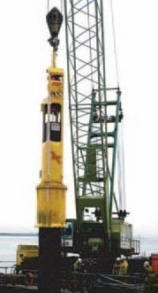
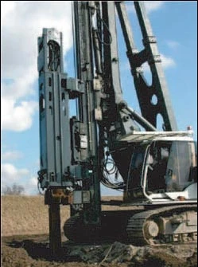
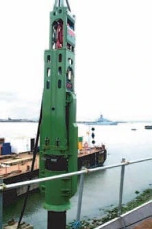
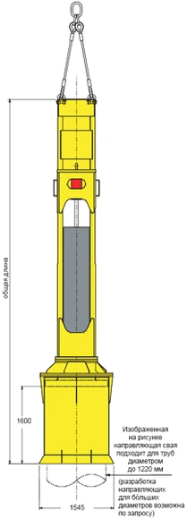
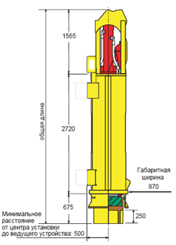
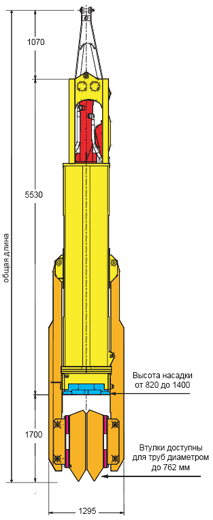

Молоты для несущих и шпунтовых свай CX
Забивка несущих и шпунтовых свай. Доступны крепление на лидере, свободный подвес с опорами и подвес с направляющей для труб.
Модели и исполнения
Запросить комплектациюСерия допускает работу с наклонными сваями. Указанная предельная весовая нагрузка свай — до 15 000 кН.
Размеры и массы конфигураций ориентировочные. В массу входит наголовник или колпак. Исполнение зависит от типа сваи и требований заказчика.
Фотографии и материалы серии











